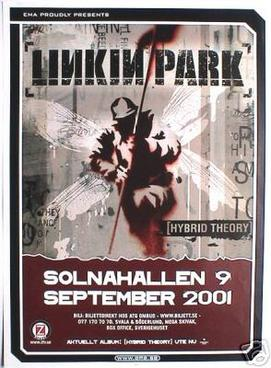

Hybrid Theory World Tour

Hybrid Theory World Tour was the first concert tour by
American nu metal band Linkin Park. It was launched in
support of Linkin Park's debut studio album, Hybrid Theory (2000).
The tour started on July 22, 2000 in St. Petersburg (Florida) and
ended on September 24, 2001 in Amsterdam. The duration of the tour
was almost half year. The tour consisted of four legs which made a
total of 57 shows. The promotion for the album was done by various
other tours like Deftones' "Back To School" Tour, "Ozzfest", "Family Values Tour",
"Countdown To Revolution Tour" and "Projekt Revolution" which the band headlined
or acted as a supporting act.